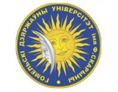
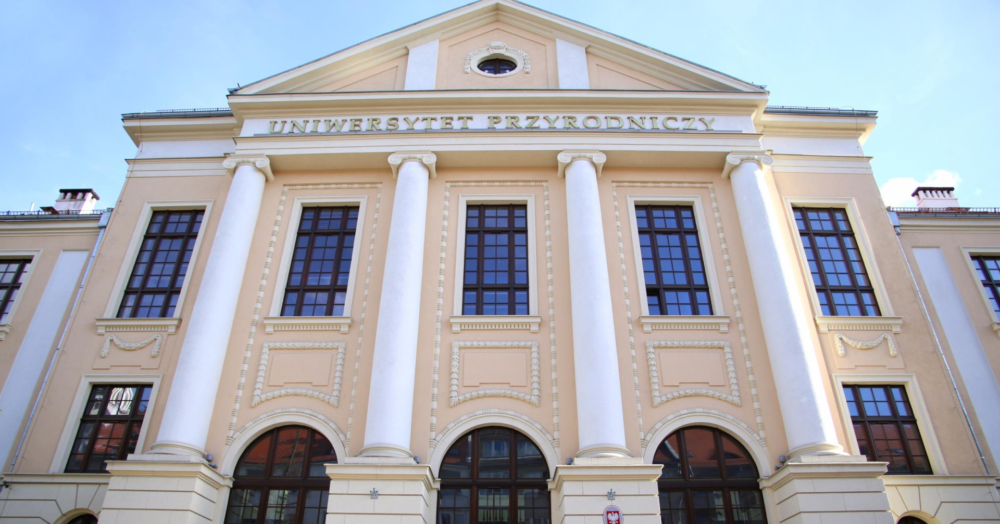
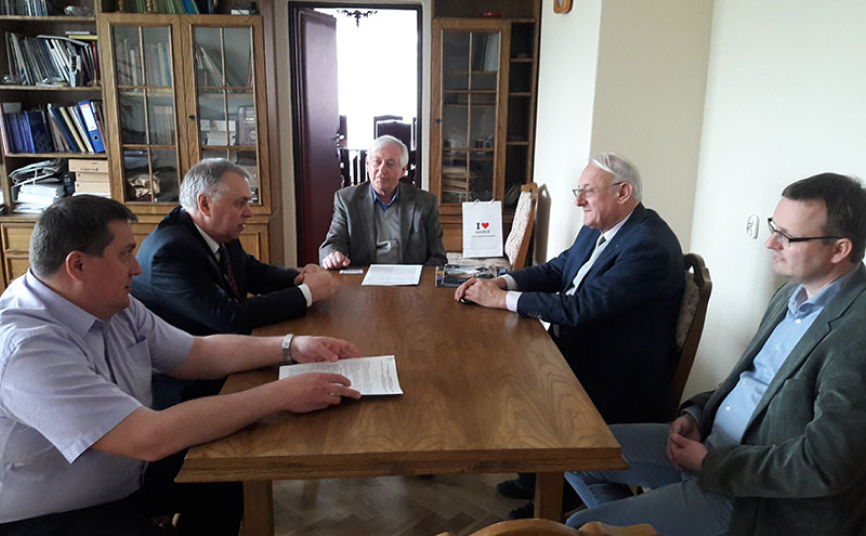
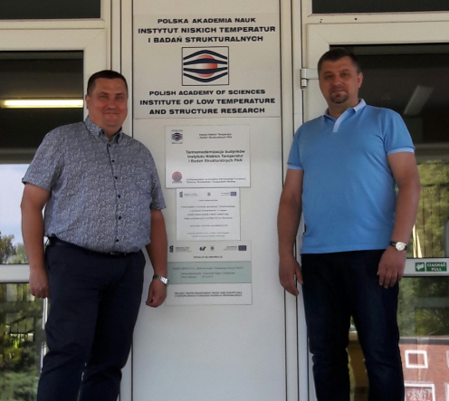

Лаборатория
Учреждение образования
“Гомельский государственный университет
имени Франциска Скорины”
“Гомельский государственный университет
имени Франциска Скорины”
Белорусско-польская лаборатория

Совместная польско-белорусская научная лаборатория золь-гель материалов и технологий создана в 2016 году на базе Института низких температур и структурных исследований Польской академии наук (город Вроцлав) и Гомельского государственного университета имени Франциска Скорины. Об этом корреспонденту БЕЛТА сообщил заведующий проблемной научно-исследовательской лабораторией перспективных материалов гомельского вуза Владимир Гайшун.
Договор о создании лаборатории подписан во время визита делегации ГГУ им. Ф.Скорины в Польшу. "Начало совместному сотрудничеству с польским институтом было положено еще 20 лет назад. Но только сейчас мы пришли к соглашению о создании совместной польско-белорусской лаборатории. Этот шаг позволит белорусским ученым обмениваться опытом с польскими коллегами, проводить совместные исследования, участвовать в работе международных конференций. Также одним из направлений деятельности лаборатории станет привлечение преподавателей, аспирантов, студентов к решению современных задач науки и техники", - сказал Владимир Гайшун.

Польско-белорусская коллаборация позволит облегчить процесс коммерциализации научных разработок и проектов с их последующим продвижением на рынок Евросоюза. "Это станет возможным благодаря Бирже инновационных разработок (Варшава), на базе которой создана инновационная площадка для подготовки сделки между инициатором проекта и инвестором с предварительной экспертизой проекта научным и бизнес-сообществом", - пояснил собеседник.
Польские и белорусские ученые уже начали работу над совместным проектом по оптической керамике, который будет представлен в ходе реализации рамочной программы Европейского союза "Горизонт 2020".
Институт низких температур и структурных исследований Польской академии наук развивает несколько научных направлений. В их числе - исследование свойств материалов при критически низких температурах, в том числе их оптических характеристик, а также занимается разработками новых материалов.
Золь-гель процесс - технология материалов, при которой из жидкости образуется гель, а из него - объемный или тонкопленочный материал. Технология нашла широкое применение в оптике и электронной промышленности.


Контакты
Республика Беларусь, 246019 Г. Гомель ул. Советская, 102
Тел.: +375(232) 57-64-36
факс: +375(232) 57-63-57
Заведующий ПНИЛ ПМ Гайшун Владимир Евгеньевич
Тел.моб. +375(44) 755-05-05
E-mail: vgaishun*gsu.by vgaishun@mail.ru
Схема проезда
ПНИЛ ПМ 2021 © УО"ГГУ им. Ф. Скорины"